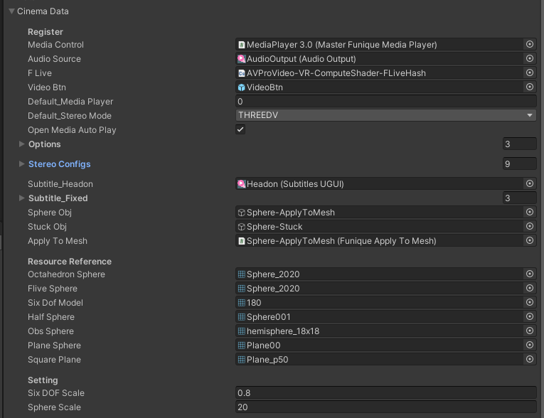
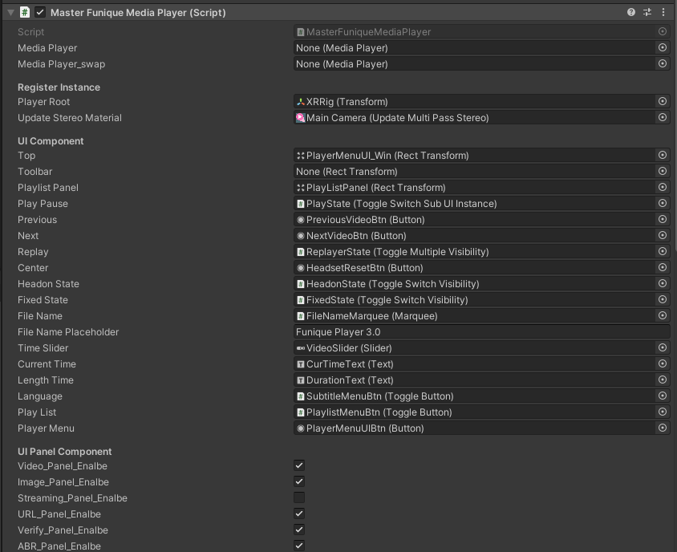

劇院快速開始
快速介紹配置用途, 以及繼承後能改寫什麼
配置

- Media Control -> 指向 Funique 主播放器元件
如果你尋主播放器元件下去會找到詳細的 UI 控制

- Audio Source -> AvPro 聲音輸出
- FLive -> 運算著色器 For 自定義 Stereo
- VideoBtn -> 介面按鈕實體
- Default_Media Player -> 預設 AvPro 播放器
- Default_Stereo Mode -> 預設 Stereo mode 如果偵測失敗的時候
- Options -> AvPro 媒體播放器列表
- Stereo Config -> VR 影片的格式, 對照材質, 元件, 管線配置
- Subtitle_Headon -> PC 螢幕字幕
- Subtitle_Fixed -> 場景 3D 字幕
- Sphere Obj -> 套用影片材質的渲染元件
- Stuck Obj -> 過度使用的模型 (過時)
- Apply To Mesh -> 套用影片材質元件
- Six DOF Scale -> 自由角尺寸
- Sphere Scale -> 圓尺寸常數
Options
- Name -> 只是命名
- Meta -> 額外資訊
- Support_Swap -> 支援滑順 (很吃效能)
- Target -> AvPro 媒體播放器元件實體
Stereo Config
- Mode -> 模式
- Target 目標配置
Stereo Config Target
- Apply Mesh Type -> 使用 3D 模型
- Media Filter -> 貼圖的 Filter 模式
- Wrap Mode -> 貼圖的 Wrap 模式
- Hint Packing -> AvPro 播放器配置
- Apply To Mesh Packing -> AvPro 元件配置 (正常跟播放器配置會一樣)
- Apply Sphere Scale -> 套用預設尺寸
- Apply FLive Compute Shader -> 使用運算著色器 (建議只在 PC 版本開)
- Apply Grid -> 套用材質球的 Grid 演算法
- High Quality -> 套用 AvPro 內建材質球的高品質設定 (過時)
- Apply Default Rotation -> 套用預設旋轉
- Custom Sphere Scale -> 自定義尺寸
- Custom Sphere Rotation -> 自定義旋轉
- Is 4 Dof -> 攝影機自由移動
- Is Live -> 是否是 Live
在高自定義的場景中, 則是能延伸基礎配置
詳細查看 HD 結尾的場景
多半都是過去用 Enum 的部分ㄝ, 在 HD 的場景下會以字串 ID Map 進行配置處理
繼承元件
// Writing your own manager
public class CinemaClient : CinemaManagerClientUtility {
}
在 Main 場景元件中, 你能修改或新增屬性
public class Main : MonoBehaviour {
// Explose the config to editor level, provide desginer to tweek the value
[SerializeField] CinemaManagerClientData data;
// Our manager instance
CinemaClient cinema;
void Start(){
// Create cinema server manager process
cinema = new CinemaClient();
cinema.RegisterConfig(data);
}
void Update(){
cinema.FrameUpdate();
}
}
覆蓋 Main
public class Main_Second : Main {
// Explose the config to editor level, provide desginer to tweek the value
[SerializeField] MyData mydata;
MyComp _MyComp;
public IMyComp CompManager => _MyComp;
// You can override the default init manager behaviour
protected override void InitManager(){
if (_MyComp != null) _MyComp.RegisterConfig(mydata);
base.InitManager();
}